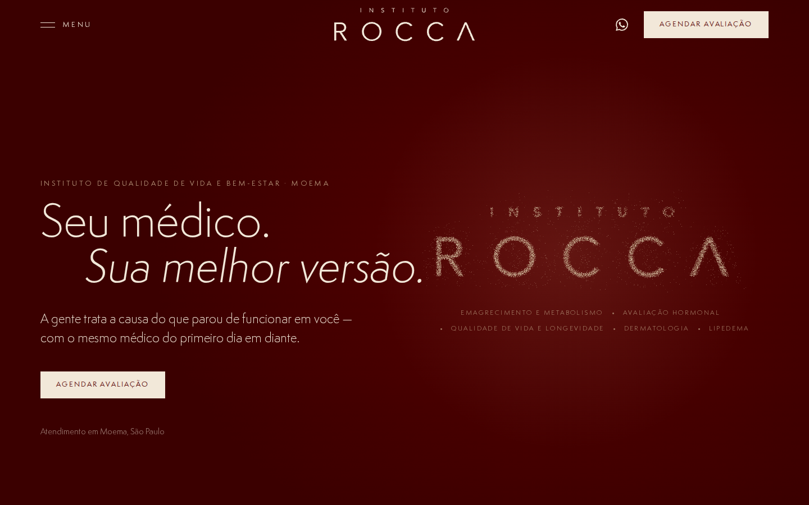
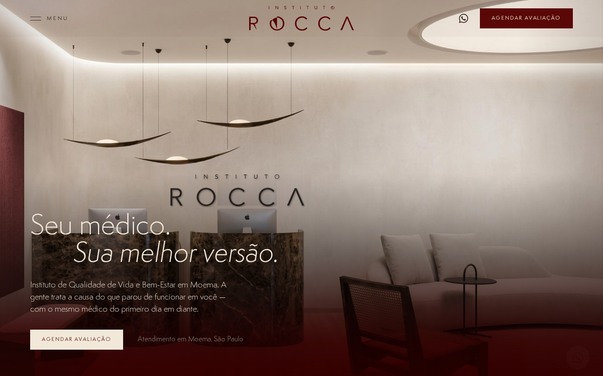
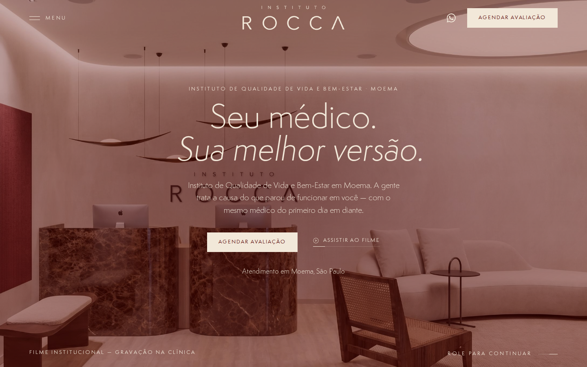

CONCEITO 01
Matéria — partículas
O que se dispersou volta ao lugar: milhares de partículas em creme e madeira convergem para uma forma que respira, reagem ao mouse e se dissolvem no scroll. three.js + GSAP.
Abrir o conceito →
CONCEITO 02
Chegada — a entrada
Você chegou: a recepção em tela cheia, madeira, mármore e luz quente, como capa de revista de arquitetura. O mais próximo da Clinique La Prairie no respiro.
Abrir o conceito →
CONCEITO 03
Presença — o filme
A casa como ela é: o filme institucional gravado na clínica ocupa o hero (por enquanto, os renders em movimento), com bastidores das duas diárias e os médicos em vídeo.
Abrir o conceito →